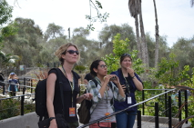

© Dieter Lukas
Corina, Luisa, and Christin are observing a grackle

© Corina Logan
Meet Charlie (female), our first tagged great-tailed grackle!
|
|
Want to join the grackle team?
Current grackle field site: Woodland, California
The Grackle Project aims to understand the role of behavioral flexibility in invasion success. The project started in Santa Barbara, CA in 2014, then moved to Arizona State University 2017-2020, and now we are based in Woodland, CA (2020-2021).
We track individually identified (through unique color leg band combinations) grackles using focal follow protocols to gather behavioral data, and we bring some grackles into aviaries temporarily to give them choice tests. If you are interested in obtaining research experience with The Grackle Project, please see the application instructions below, click the links at the top of the page to learn more about the project, and apply. As biologists, we know the importance of diversity and we encourage applications from individuals belonging to groups that are traditionally underrepresented in the sciences.
Students can be based at any institution in the world and can often receive credit toward degree requirements (e.g., Research Electives) if they are able to organize it. Students who are not located near the field site (and thus are not able to work with the grackles in person) are able to get involved with the project remotely via helping watch videos of experiments.
Required qualifications for students who work with the grackles:
Interest in learning how to conduct bird behavior research
Ability to work outside in hot and cold weather while using the project's binoculars and be able to walk sometimes extensively to follow the birds
Must collaborate well in teams
Must be skilled at detail-oriented work
Required qualifications for students who work remotely:
Interest in learning about bird behavior research
Ability to work from home using your computer with an internet connection
Must collaborate well in teams
Must be skilled at detail-oriented work
Students who wish to apply. . .
Please email Dr. Corina Logan (corina_logan [at] eva.mpg.de) an initial inquiry with
1) your availability to work on the project (number of hours per week, begin and end dates, whether you will need to write a report on your work), and
2) describe how you demonstrate the potential to be a strong role model for groups that are traditionally underrepresented in the sciences (e.g., via outreach activities you have conducted, groups you have held leadership positions in, policies you have been influential in changing, talks you gave, discussions you organized, etc.).
If Corina confirms that your availability and interests meet a current team opening, then please email Corina your application materials: cover letter and CV (Curriculum Vitae; a researcher's version of a resume. Here is advice on how to make one). In the cover letter, discuss how you meet the required qualifications and explain your motivation for applying for this position.
|